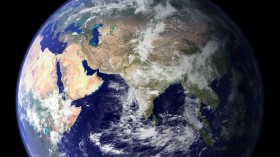

地球

地球是距离太阳的第三颗行星,
也是目前人类已知的唯一孕育和支持生命的天体。地球表面的大约 29.2% 是由大陆和岛屿组成的陆地。剩余的 70.8% 被水覆盖，大部分被海洋、海湾和其他咸水体覆盖，也被湖泊、河流和其他淡水体覆盖着，它们共同构成了水圈。地球的大部分极地地区都被冰覆盖。地球外层分为几个刚性构造板块，它们在数百万年的时间里在地表迁移，而其内部仍然保持活跃，有一个固体铁内核、一个产生地球磁场的液体外核，以及一个驱动板块构造的对流地幔等。